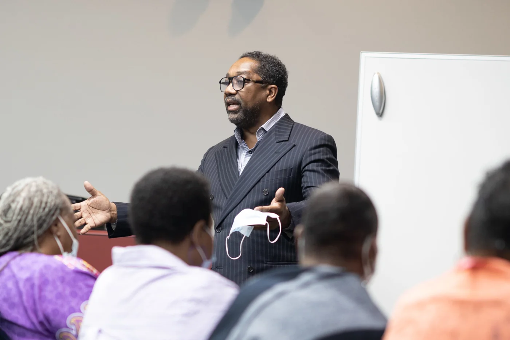

Fighter.
Uniter. Leader.
Jerry takes personal responsibility for the quality of life in his community, working through business, education and government with one goal: positive change.

raised as Deputy Chairman of the Tennessee Democratic Party (2005 to 2007).
newly registered voters from his statewide minority registration effort.
in MBE contracts from the MOU he negotiated with Bell Construction.
Tennessee Democratic Party
- First African American Deputy Chairman (Executive Director) of the Tennessee Democratic Party
- First African American Chair of the Finance Committee, raising over $500K for the party
- Led statewide minority voter registration that produced 40,000+ new voters
- Organized the annual Jackson Day fundraiser, raising more than $300K
- Elected to the DNC Standing Committee on Credentials representing President-elect Barack Obama (2008); delegate for President Obama in 2008 and 2012
Metro Nashville Council
- Elected Council Member At-Large in 2007 and re-elected in 2011, serving on Budget & Finance, Education, and Health, Hospitals & Social Services
- Secured $350K for the Tennessee State University John Merritt Classic
- Secured $10M+ for Nashville General Hospital's electronic medical records and imaging equipment
- Co-sponsored the Metro Employee Healthcare Incentive Plan, giving Metro employees no out-of-pocket costs at Nashville General
- Raised and secured $10M+ for the National Museum of African American Music
- Negotiated the Metro Minority Caucus and Bell Construction MOU for MBE inclusion, producing $80M+ in contracts
- Led on securing $1M from the State of Tennessee for the Gateway to Heritage project on Jefferson Street
In the community
- Helped nearly 200 families transition from shelters to homes
- Held job fairs for previously incarcerated neighbors
- Created Christmas in July, providing clothing, appliances, bikes and supplies
- Opened a food pantry and provides hot meals
A record recognized.
Lifetime Achievement Award, Davidson County Metro Minority Caucus
Omega Psi Phi Uplift Award, Phi Gamma Gamma Chapter
Community Service Award
Nashville Alliance of Black School Educators
Community Trailblazer Award
J.U.M.P. Community Advocate
Dr. R.H. Boyd Minority Business Advocate of the Year, Nashville Minority Business Center
In their words.
I've worked with Jerry Maynard up close. Jerry fights for what he believes and then works with you to get something done to help people. He's a fighter, he's an uniter, and he's a leader.
 Karl DeanFormer Mayor of Nashville
Karl DeanFormer Mayor of NashvilleHis approach is fearless and effective. You don't get things done by going along to get along. Nashville General and the National Museum of African American Music are great examples of where Jerry's fearless effectiveness got big wins for our community.
 Sharon HurtMetro Nashville Councilwoman At-Large
Sharon HurtMetro Nashville Councilwoman At-LargeI named him to be the first and only Deputy Chairman of the TN Democratic Party. Jerry has always been and remains loyal, trustworthy, diligent, and dependable.
 Bob TukeAttorney and Founder, Trauger & Tuke
Bob TukeAttorney and Founder, Trauger & TukeBring Jerry to your table.
Keynotes, boardrooms, pulpits and panels. Jerry speaks on leadership, faith and building wealth in community.